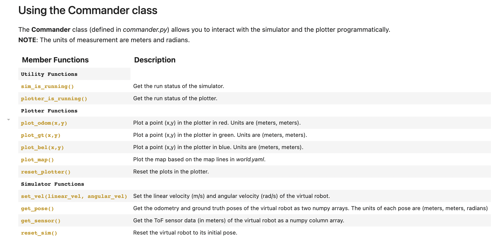
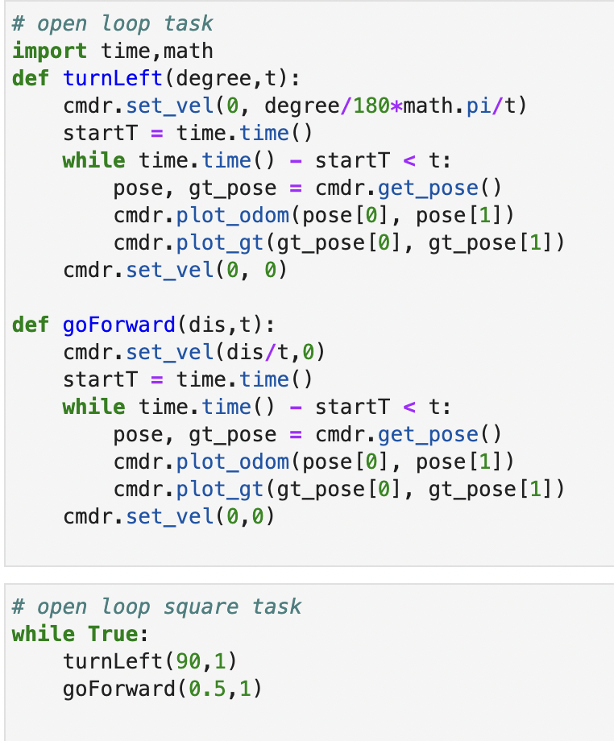
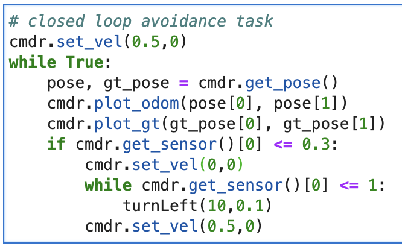

Lab 10 Report
For this lab, I followed the guide and implemented an open loop control to go in a square trajectory,
and a closed loop control for object avoidence.
Set up
besided following the hand out, I encountered an error when installing PyQt5. I'm using an M1 Macbook.
I found a workaround by installing PyQt6 instead of PyQt5. Just one line of code change fixed it.
Though, I don't know how the simulation works from a low level perspective.
Task 1 Description of the simulator
The simulator simulates a robot dynamics. We can control it through changing its velocity and
angular velocity, though I think the collision hasn't been implemented, the velocity goes quite werid
when colliding with the wall. Another feature is sensor readings, the robot has a TOF reading right in
front of it, in the middle of the front bumper. And it has a ground truth reading that is its absolute position
and orientation reading, and a odometer reading, that is it relative position and orientation readings.
And for another function, we have a plotter, it is used to plot above sensor readings and robot position and
orientation in real time.
For a control and readings functionality, see Fig.1 where I screenshot from the jupyter note book guide.

Fig.1 Simulation commands
Task 2 Open loop square
Here I implemented a open loop controller. The logic is set a velocity, then let timer run for a certain amount of
time so we can get constant translation. See Fig.2 for the code. Here I wrote two cuntions, one for setting how
far I want the robot to go, and another for setting how much I want the robot to rotate. The first parameter is
distance in meter/rotation in degree, second parameter is time I want it to take to complete the translation/rotation.
And for the square I just put it in a loop to go straight then left.

Fig.2 Square Trajectory Code
From above video, and from the ground truth coordinates (green), you can see that the robot doesn't follow the square exacty,
I think it's because the step of each robot state, it can get in a half state at one step.
And the odometer readings (red) is chaotic, that's is due to robot's sensor reading is cumulated and I think the random
noise generated in the robot model is quite large thus it isn't accurate at all.
In the video, I execute the robot to go 0.5 meter in 1 second. So the velocity is 0.5 m/s.
And for the turn, I execute the robot to turn 90 degrees in 1 second, so the angular velocity is 1.57 rad/s.
Task 3 Closed loop object avoidence
Here I implemented a closed loop control, the logic is the robot always go forward unless the TOF
readings is smaller than 0.3 meters, else, it turns left 10 degree increment until the TOF reading is
larger than 1 meter, and it keeps going forward again. Code shown in Fig.3.

Fig.3 Object Avoidence Code
I think the speed isn't the only factor to concider here, collision distance also need to be factored in,
Now I set the robot to go 0.5 m/s, and with a collision distance of 0.3 meters, set it this long isn't just for
it to stop in time, but also taking account to the robot's body size. It can't detect object that's close to its side,
like in the video shows at 0:17.
I think a good solution is to have two sensors to detect if each side is about to collide,
or we can implement an wiggle trajectory, which takes much more time for the robot to get
to where it needs to be. So for the robot to turn left and right slightly while going straight.